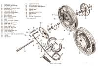
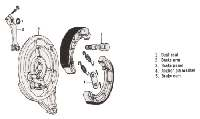
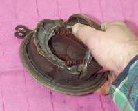
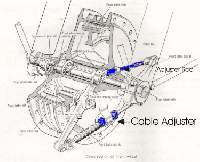
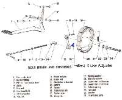

Drum Brakes are used mostly on the rear wheel these days. If you are working on early 1980s, or earlier, you will find them on the front wheel too. They come in two general types. Single Leading Shoe and Twin ( Dual ) Leading Shoe.


The Single Leading Shoe has a cam which pushes one side of each brake shoe out to make contact with the brake drum, when the brakes are activated. The Twin Leading Shoe has two cams on each end of the brake shoe pushing both ends out to meet the drum. This gives better shoe to drum contact, increasing braking power. They are, however, more difficult to adjust and if not adjusted right, give less braking power than Single Leading Shoe types.
Most motorcycle brakes die from abuse not wear. The brake cam shaft rusts up tight and/or the glue holding the linning to the shoe fails. In both cases you will need to remove the wheel, remove the brake shoes and drive out the brake cam and clean it.

To replace the Brake shoes simply lever one up and they both will pop off, but still be connected by the springs. Switch the springs to the new set of shoes and lever them back on. If they still have thick, within spec, linings, sand the glaze off with sand paper and reuse them. Do not breath any of the brake dust. Clean up the brake backing plate, grease the brake cam shaft and pivot post. Then put it back together. Take some sand paper and sand the inside of the brake drum. Again, don't breath the dust. Very probably it will have some wear and/or grooves in it. It should be turned down to give the best braking, however this takes special equipment and can be expensive. Most times, just sand it as smooth as you can and things will work just fine.
Front Drum Brakes are normally cable operated.
You need to adjust the connector between the two Brake Cam Levers (arms) so that both ends of each shoe contacts the brake drum at the same time. To do this, loosen both the cable adjuster and the rod connecting the two brake cam levers. Tighten the cable adjuster. The one on the brake drum, not the one on the handlebar. When the brake starts to drag, keep turning the wheel and get a good " feel " of how much drag there is. Now tighten the rod going to the other brake cam lever till the drag " feels " about twice as much as before. Tighten the lock nut, then adjust the cable so that there is at least an 1/8" of play at the handlebar brake lever.
By adjusting the play you can make the brake lever engage the brake wherever you like. Like closer to the handlebar if you have small hands. Don't be afraid to make the lever fit your hand. Just make sure there is enough free play in the cable so the brakes don't drag, and that the lever does not touch the handlebar when they are full on. How do you tell if they are dragging? Feel the drum after riding a ways. If it is really hot and you have not used the brakes much, they are dragging. If you are sure the brakes are not dragging and the drum is still hot, check your wheel bearings.

Rear Brakes can be cable or shaft operated. They need about 1/2" of play. Normally, they are adjusted by a nut or wing nut on the rear end of the cable or rod that is actvated by the Rear brake Pedel. Most, if not all, are of the Single Leading Shoe type. Repair them just like the Front Brakes.
When everything is back together, but before you tighten the axle, spin the wheel and put on the brake hard and hold it. Then, still holding the brake on, tighten the axle. This aligns the brake shoes and drum, making the brake work better. Do this for both Front and Back Drum Brakes, Single or Twin Leading Shoe.